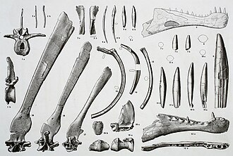

History:

The spinosaurus were first discorvery on October 1898 by Fernand Foureau.
The name spinosaurus comes from the Latin spina, meaning "spine", and the Greek sauros, meaning "lizard", and thus "spine lizard".
Appearance:
Spinosaurus has been a contender for the largest theropod dinosaur, at 15 m (49 ft) in length and upwards of 6 t (6.6 short tons) in weight.
It's some famous feature is it's shine and it's back.
an adult Spinosaurus was 1.75 meters (5.7 ft) long.
Other:
The biggest carnivorous dinosaur of them all.
The spinosaurus is completely blind.
Spinosaurus is actually afarid of the Tyrannosaurs.
"It wasn't on their list. Which makes you wonder what else they were up to".